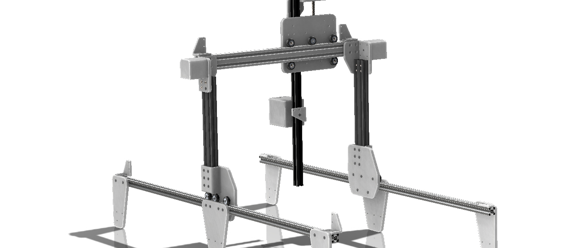
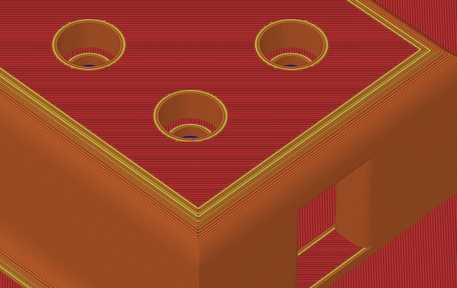
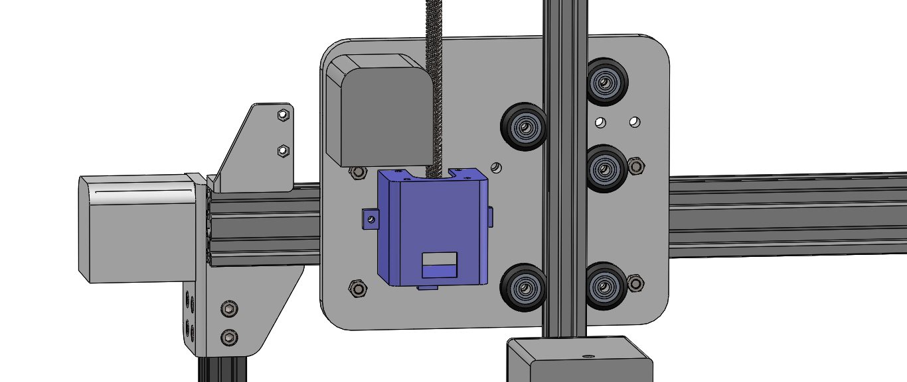

3D Printed Farming Robot
Description
An alteration of the original farmbot which is an open-source fully automated CNC farming robot capable of planting and supervising the sapling's health regarding the water and soil condition. This project was mainly focused on modifying the individual parts of the farmbot to suit being 3D printed. These modifications can help provide impoverished areas with technology that aids their daily tasks at an affordable price tag.
Objective
To modify the farmbot's CAD models so that they can be 3D printed.
Challanges
- Restriction due to the 3D printer’s layer height and thickness.
- Decreasing the number of components and fixtures without reducing the overall functionality.
- Adjusting the weight distribution and stability of the cross slide.
- Restriction due to the 3D printer’s layer height and thickness
-
When 3D printing a model, several factors should be kept in mind. Some of the major restrictions faced by 3D printed models are caused by the layer’s height and thickness. This was resolved by increasing the overall thickness of the CAD designs while maintaining a sufficient distance between fixture openings to avoid the failure of the component.
 - Decreasing the number of components and fixtures without reducing the overall functionality
-
Another issue faced while working on this project was the number of components, fixtures, and bearings needed. To make these models more affordable, the number of integrated parts had to be diminished. The reduction of components was mainly focused on the secondary parts that provide optional functions. Concerning the number of fixtures and bearings, an optimum number was used, taking into consideration the efficiency and balance of the whole system.
- Adjusting the Weight Distribution and Stability of the Cross Slide
-
When studying the design of the farmbot, it was noticed that the Z-axis stepper motor was in constant motion with the Z-axis. This causes instability in the Z-axis motion and increases the risk of system failure. This issue was settled by adjusting the position of the motor so that it mounts to the cross slide.

Main Components
| Name | Function | Axis Placement |
|---|---|---|
| Cross Slide | Acts as a base for X and Z axes motion components and contains the universal tool head | X |
| Stepper Compartment | Compartment cover for stepper motors | X and Z |
| Extrusion connection | Connects extrusions together and with the wooden frame | Y |
| Gantry wheel mount | Connects the horizontal and vertical extrusions together and provides motion on the Y axis | Y |
| X-Z Corner brackets | Connects the vertical extrusion to the X axis | X and Z |
| Lead screw connection | Provides the Z axis motion | Z |
| Timing belt connection | Holds timing belt in place to provide the motion on the Y axis | Y |